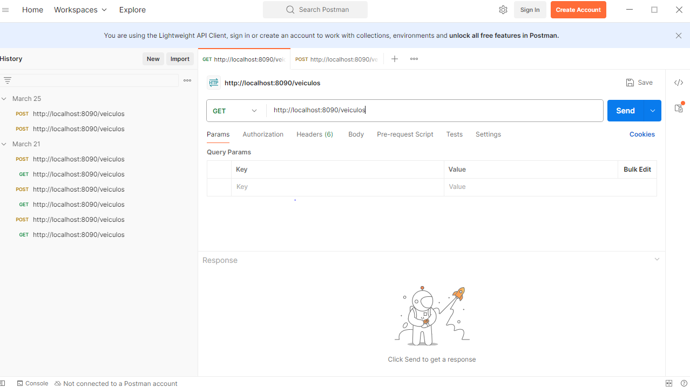
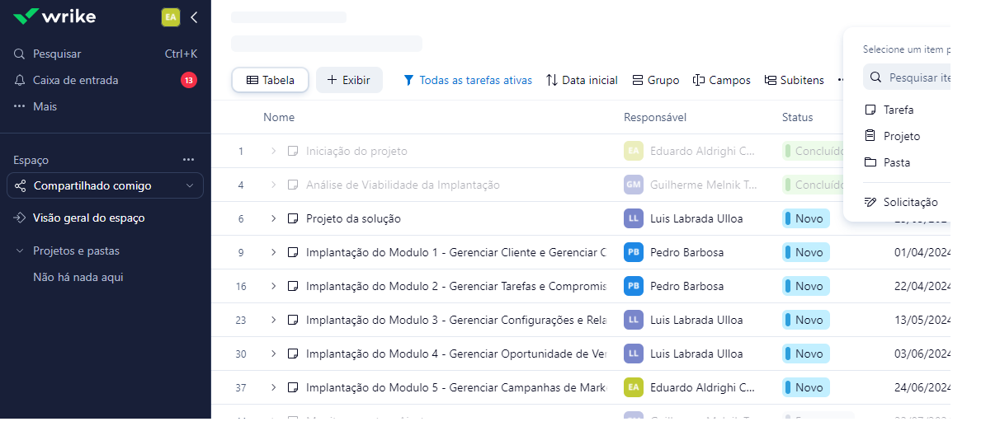
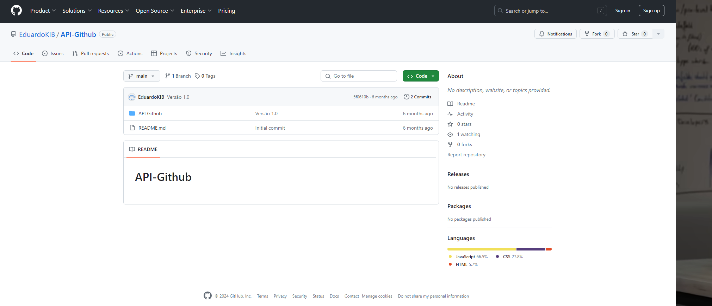
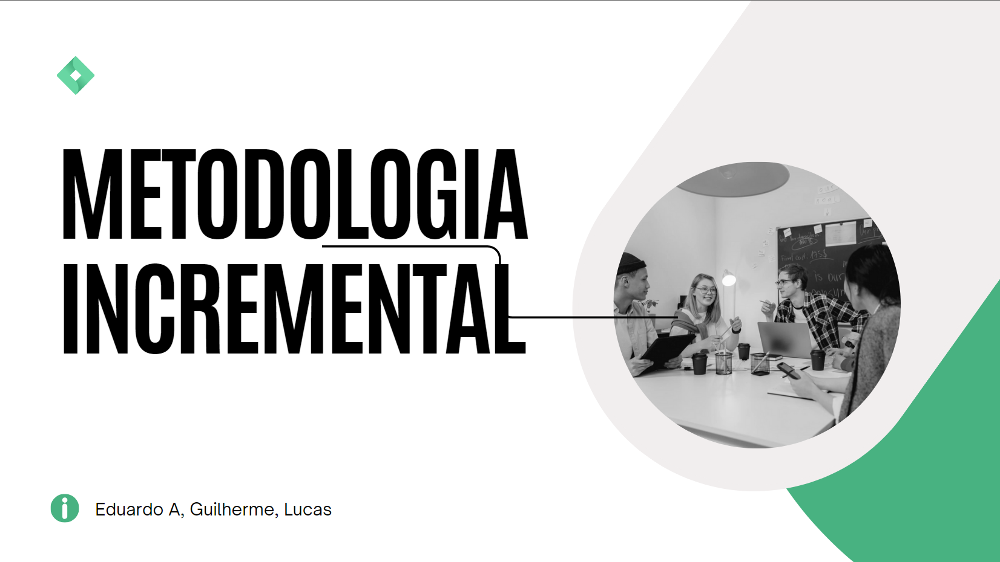
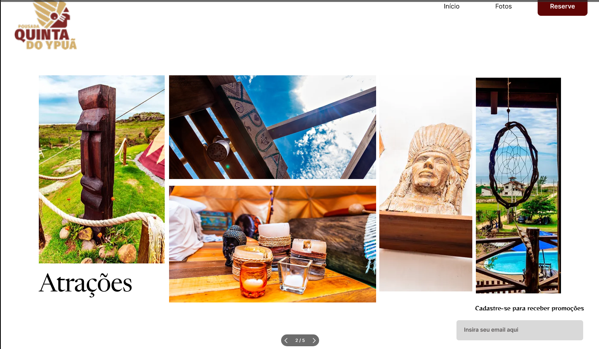
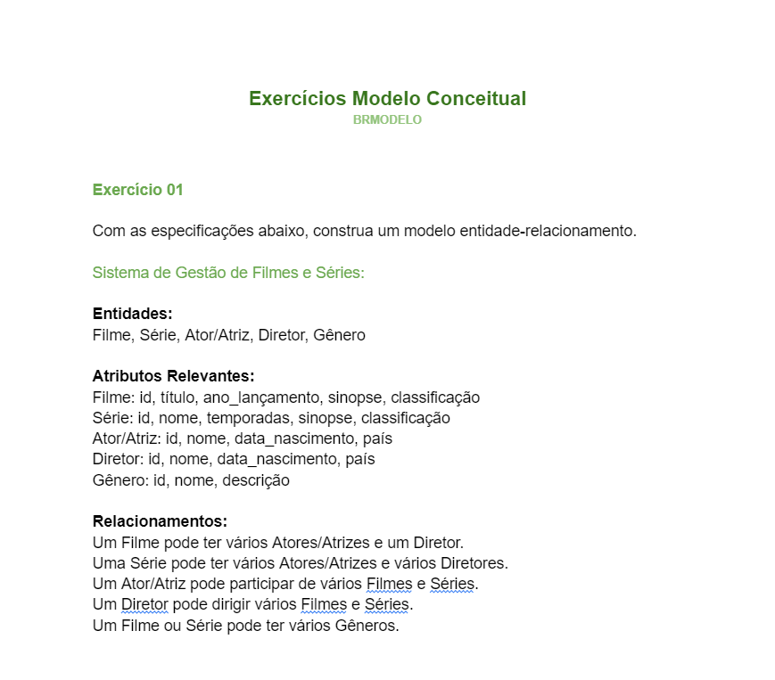

Atividades do Técnico
 Desenvolvimento de sistemas
Desenvolvimento de sistemasCalculadora de Horas
Utilizando React, fizemos em sala uma pagina que calcula horas.
 Desenvolvimento de sistemas
Atividade Postman
Interagi com um site de cadastro de veículos via Postman, realizando operações de criação, consulta, atualização e exclusão de veículos através de requisições HTTP.
 Desenvolvimento de sistemas
Atividade projeto CRM
Fizemos uma atividade de implantação de CRM utilizando o site Wrike.
 Desenvolvimento de sistemas
API- github
Fizemos uma API utilizando React e colocamos no github para melhor entender os conceitos de react e a utilização do github.
H3, H4, H5, H6, H9, H10
 Modelagem de sistemas
Sala de aula invertida
Em equipe realizei uma atividade de "Sala de Aula Invertida" sobre as principais metodologias de desenvolvimento de software e apresentei para turma.
 Modelagem de sistemas
Wireframe de Alta Fidelidade
Fizemos o Modelo de alta Fidelidade da nossa SA utilizando o site do figma.
Regras de negócio S.A
Nessa atividade definimos as regras de negócio de nossa atividade S.A para que nosso site seja construídas da forma mais clara possível.
 Banco de dados
Lista de exercícios - Modelo Conceitual
Seguindo as especificações passadas pela professora, construimos modelos conceituais de entidade-relacionamento para praticar os conhecimentos desenvolvidos em aula.
Banco de dados
Modelagem Sistema de Gestão de Consultório Médico
Em grupo fizemos a Modelagem de um Sistema de Gestão de Consultório Médico web utilizando o modelo conceitual e logico que aprendemos sobre em sala, em seguida apresentamos a professora .
Pesquisa Normalização de dados
Produzi uma pesquisa guiada sobre normalização de dados e suas 3 formas normais.
Projeto Bibloteca
Utilizando netbeans produzimos um projeto back-end front-end de um sistema de gerenciamento de cadastros de uma Bibloteca.
Nada aqui por enquanto